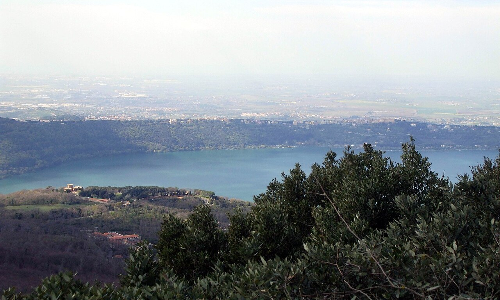

Castel Gandolfo Papal Palace Tickets

The Castel Gandolfo Papal Palace is the Pope's former summer residence, about 40 minutes south of Rome above Lake Albano, now open to the public as a museum. For nearly 400 years it was the popes' private retreat, until Pope Francis opened it to visitors in 2016. There are three things to see: the Papal Apartments, the vast Barberini Gardens, and the astronomical observatory domes. Tickets start at €20 for palace entry, with garden minibus tours and observatory add-ons costing more. It is an easy day trip from Rome by regional train, and you should allow 3 to 5 hours.
The Castel Gandolfo Papal Palace is one of Rome's best half-day escapes, a chance to walk through the rooms where popes spent their summers for four centuries.
It sits in a hill town above a volcanic lake, and since Pope Francis opened it in 2016 anyone can now visit the apartments, the gardens, and even the Vatican's old observatory.
Because it runs as a museum, you book to get in, and the ticket you choose decides whether you see the apartments, the gardens, the observatory, or all three.
This guide covers your ticket options and what each one includes, what you can see, how to get there from Rome, and the practical details for the day, so you can book the right one before you go.
📋 In This Guide
🎟 Top Vatican Tickets & Tours
Castel Gandolfo Tickets and Tours
There are three different tickets, some with more than one option. Here is a quick comparison, then the details on each.
| Ticket | Price | What it covers |
|---|---|---|
| Palace Entry Ticket | €20 | Apartments and Secret Garden, self-guided |
| Papal Apartments and Secret Garden | €26 | Apartments and Secret Garden, reserved entry |
| Astronomical Domes | €36 | The third-floor Vatican Observatory domes |
| Gardens Minibus Tour | €30 | 1-hour open-air drive through the Barberini Gardens |
| Minibus plus Domes | €46 | Gardens minibus drive and the observatory domes |
| Minibus plus Porchetta | €47 | Gardens minibus drive and a local lunch |
Castel Gandolfo Papal Palace Entry Ticket
The simplest, best-value way in, at your own pace.
- This tour takes around 2 hours
- Time slots: 9:00 am, 09:30 am, 10:00 am, 10:30 am, 11:00 am, 11:30 am, 12:00 pm, and 12:30 pm
- Timed fast-track entry to the Apostolic Palace, with the Papal Apartments, the Swiss Hall, the Gallery of Alexander VII, the Papal Portrait Gallery, and the carriage and car museum
- Self-guided access to the courtyard, the Secret Garden, and the Giardino del Moro
- Optional audio guide is available in English, Spanish, French, Italian, or German
- Price: Adult (19+ years): €20, Youth (7 - 17 years): €11, Infant (under 7 years): Free
- Free cancellation up to 24 hours before your visit
- Does not include the Barberini Gardens minibus, the observatory domes, or transfers from Rome
Papal Palace, Secret Garden and Observatory Tickets
Reserved palace entry, with the option to add the observatory domes.
- Papal Apartments and Secret Garden: Reserved skip-the-line entry to the Pope's summer apartments and offices, plus a self-guided walk through the Secret Garden and Moro Garden.
- Take about 1.5 hours, with start times as 9:00 am, 09:30 am, 10:00 am, 11:00 am, 12:00 pm and 1:00 pm
- Prices: Adult (18+ years): €26, Youth (7 - 17 years): €14, Infant (Under 7 years): Free
- Astronomical Domes: Entry to the third-floor twin domes of the Vatican Observatory, with historic telescopes and tools from 1935 and commentary on the Vatican's astronomers.
- Takes about 2 hours and starts at either 10:30 am or 11:30 am
- Prices: Adult (18+ years): €36, Youth (7 - 17 years): €22, Infant (Under 7 years): Free
- Both offer free cancellation up to 24 hours before the day of your visit
- An optional audio guide is available in English, Spanish, French, Italian, or German
Castel Gandolfo Gardens Minibus Tour
See the huge gardens without the walking, with two upgrades to choose from.
- Open Minibus Tour with Audio Guide: A 1-hour panoramic drive on an eco-friendly open-air minibus through the 55-hectare Barberini Gardens, past cypress avenues, fountains, and Emperor Domitian's Roman ruins, with an English audio guide
- Prices: Adult (18+ years): €30, Child (6 - 17 years): €30, Infant (under 6 years): Free
- Minibus plus Astronomical Domes: The gardens minibus drive plus third-floor access to the observatory domes, about 2 hours
- Prices: Adult (18+ years): €30, Child (6 - 17 years): €30, Infant (under 6 years): Free
- Minibus plus Porchetta Sandwich: The gardens minibus drive plus a voucher for a traditional porchetta sandwich and a glass of local Castelli Romani wine in the town square, about 2 hours
- Prices: Adult (18+ years): €46, Child (6 - 17 years): €32, Infant (under 6 years): Free
- All three have free cancellation up to 24 hours before the day of your visit
- Departures from 10:30. The minibus is not suitable for wheelchair users
Which Ticket to Choose
They all get you into the estate, so pick by what you most want to see.
- Just the palace, on a budget: the €20 entry ticket covers the apartments and the Secret Garden, self-guided.
- The gardens without walking: the €30 minibus drive is the easy way to see the 55-hectare grounds.
- The observatory too: add the domes on either the €36 palace option or the €46 minibus combo.
- A relaxed day with lunch: the €47 minibus and porchetta option builds in a local meal.
What is the Castel Gandolfo Papal Palace
The Apostolic Palace at Castel Gandolfo was the popes' summer home from 1626, when Pope Urban VIII first moved the papal court to the cooler hills south of Rome.
For almost 400 years it stayed private, closed to everyone but the Pope and his guests. That changed in October 2016, when Pope Francis, who chose not to holiday there, turned the whole estate into a public museum.
Its history runs deeper than summer holidays. In 1944, during the war, Pope Pius XII opened the estate as a shelter for more than 12,000 local refugees, and his own bedroom was used as a delivery room where around 40 babies were born.
Pope John Paul II loved the place, calling it his "second Vatican," swimming in the pool and hosting world leaders there over many summers.
Today you visit it as a museum, which is why a ticket here is different from wandering the town for free. To see the palace, the gardens, or the observatory, you book entry.
What You Can See
There are three main parts to a visit, and your ticket decides which you get.
- The Papal Apartments - The heart of the palace, with the Pope's private rooms, the Swiss Hall, the Gallery of Alexander VII, the Papal Portrait Gallery running from earlier popes to recent ones, and a museum of papal carriages and cars. You also reach the Secret Garden (Giardino Segreto) and the Giardino del Moro.
- The Barberini Gardens - A huge 55-hectare estate of cypress avenues, clipped hedges, and fountains, best seen on the open-air minibus. It is built over the 1st-century ruins of Emperor Domitian's villa, including a 300-metre covered Roman walkway and an ancient theatre.
- The Astronomical Observatory Domes - On the palace's third floor sit the twin domes of the Vatican Observatory, the Specola Vaticana, with historic telescopes first opened by Pope Pius XI in 1935. They reopened to visitors after nearly 90 years closed.
Around the palace, the town is worth time too. Piazza della Libertà, the square by the gates, was partly designed by Bernini and holds his Fontana del Bicchierone and the Church of San Tommaso da Villanova. Below the town, Lake Albano is a volcanic crater lake with lakeside dining and boats.
How to Get to Castel Gandolfo from Rome
Castel Gandolfo is about 25 km, or 40 minutes, southeast of Rome, and it makes an easy half-day or day trip. There are three ways to get there.
- Regional train (most popular) - Take the Trenitalia regional line from Rome Termini toward Albano Laziale and get off at Castel Gandolfo station. It takes about 40 to 45 minutes and costs around €2.10 one way. The station sits below the town, so it is a 10 to 15 minute uphill walk to Piazza della Libertà.
- Vatican train (Saturdays only) - On select Saturdays, a direct train runs from the Vatican City station in Rome out to Castel Gandolfo.
- Cotral bus - Buses leave from the Anagnina metro station at the end of Line A and drop you near the top of the town, which saves the steep walk from the station.
If you are basing the rest of your trip around the main Vatican, see our how to get to the Vatican guide too.
Opening Hours and How Long to Stay
The palace keeps shorter hours on weekdays and longer ones at weekends, so plan around it.
- Monday to Friday: 9:00 am to 2:30 pm, with last entry around 1:00 pm.
- Saturday and Sunday: Extended hours, often until 5:30 or 6:30 pm depending on the season.
Hours change by season and can differ from year to year, so check the current times on the booking page before you travel.
For the visit itself, allow 3 to 5 hours in Castel Gandolfo: roughly 1.5 hours in the palace, an hour for the gardens, and time for lunch in the piazza.
Dress Code, ID, and Practical Tips
A few things to sort before you go.
- The dress code applies here too. Even though Castel Gandolfo is outside Vatican City, it is Holy See property, so shoulders and knees must be covered in the palace and gardens. See the Vatican dress code guide.
- Bring photo ID. Carry a passport or government photo ID matching the name on your booking.
- Where to meet. Report to Piazza della Libertà 12, at the main palace gates in the town square, about 15 minutes before your entry time.
- Accessibility. The palace interior has lift access, but the gardens minibus is not suitable for wheelchair users.
- Eat local. The Castelli Romani region is famous for porchetta, the herbed slow-roasted pork, and crisp local white wines. A trattoria in the piazza or by Lake Albano is a fine way to end the visit.
Frequently Asked Questions
Does the Pope still stay at Castel Gandolfo?
Not as a summer home. Pope Francis chose not to holiday there and opened the estate to the public, so it now runs as a museum rather than a papal retreat.
How do you get to Castel Gandolfo from Rome?
The easiest way is the regional train from Rome Termini toward Albano Laziale to Castel Gandolfo station, about 40 to 45 minutes, then a 10 to 15 minute uphill walk. A Cotral bus from Anagnina drops you closer to the town.
How long do you need at Castel Gandolfo?
Plan on 3 to 5 hours in total, with about 1.5 hours in the palace, an hour in the gardens, and time for lunch. The palace visit alone is about 1.5 to 2 hours.
Can I cancel a Castel Gandolfo ticket?
Yes. All the tickets here offer free cancellation up to 24 hours before your slot for a full refund, and you can reserve now and pay later.
What are the astronomical domes at Castel Gandolfo?
Astronomical domes are the twin domes of the Vatican Observatory, the Specola Vaticana, on the palace's third floor. They hold historic telescopes from 1935 and reopened to visitors after nearly 90 years.